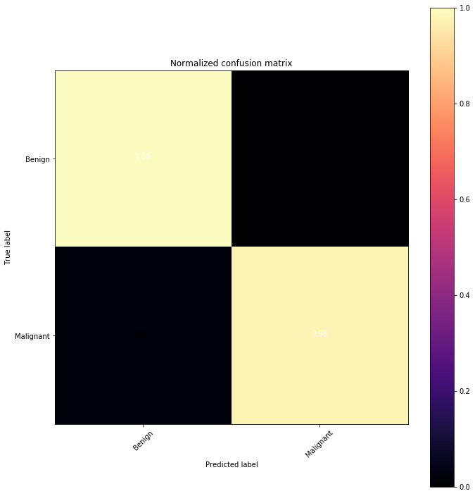

***Note: All computations and metrics have been calculated on the validation set of 114 records (20% of overall dataset consisting of 569 records)
Accuracy: 99.1228070175%
Computed Area Under the Receiver Operating Characteristic Curve (ROC AUC): 98.9361702128%
Brier Score/Hamming Loss/Zero-One Classification Loss: 0.00877192982456
Average Hinge Loss (Non-Regularized): 0.59649122807
Logistic/Crossentropy Loss: 0.302971722762
Cohen’s Kappa (Inter-Annotator Agreement): 98.1841350749%
Jaccard Index/Similarity Coefficient: 99.1228070175%
Matthews Correlation Coefficient: 98.2003265278%
